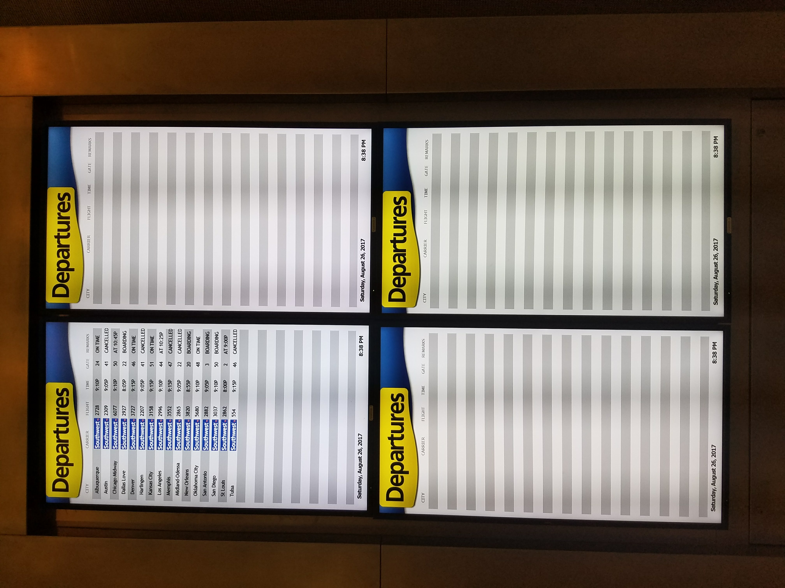

The flight over, for the most part, had been smooth. Looking out the window, the clouds hung low. A crack of lightning flashed across the sky--but no thunder followed. Typically I get nervous flying through a storm but today I hadn’t. The pilot kept the airplane relatively smooth and calm, considering the impending Hurricane.
Flying from Boston, MA on I was concerned that they wouldn’t let us leave for Houston, TX. The Hurricane began formation in the Gulf of Mexico a few days prior, and as it loomed closer it became projected for Houston. My flight was one of the last to land in Houston. Wanting to evacuate the personnel as soon as possible, the airport didn’t allow luggage off of the plane. As I walked through the airport, I decided that Sunday morning, maybe Sunday afternoon, I would leave to return to College Station to be there for the first day of university classes.
My dad picked me up in the 2014 Honda Civic, a small car, and we drove into the storm. Rain pelted the car at the same rate that we saw on the plane. On the ground, however, the water was much scarier. Why Dad didn’t bring the truck, I’ll never know. Lighting flashed, thunder cracked, rain poured. Dad drove us slowly through, trying to be careful of the rising water. There were times that I thought we would be the idiots stuck on the highway on the news. We made it home safely, thank goodness. I went to sleep fully expecting to leave in the morning for college.
You see, this wasn't my first Hurricane.
The last one I experienced, Hurricane Ike, had passed through Houston as well in 2008. I was in the 6th grade at the time. Hurricane Ike was a ag of wind, pushing trampolines into trees and roof shingles. In some areas, like Galveston, there was significant storm sure. When we were in Corpus Christi, we had prepared for Rita when I was in the fourth grade--but the storm ad suddenly changed paths and headed north to Houston. Hurricanes didn't phase me. It was a natural disaster that I felt confident and well-versed in.
Harvey was different.
I woke up and looked out my window and my street was flooded, my yard was flooded. Harvey was flooding Houston. There was no way to leave, like I had originally anticipated.
There was really nothing to do over the next few days besides watch the rain fall and the water rise. My family began making plans about moving furniture onto bricks, moving books upstairs, preparing for worst case scenanrios.
After e-mailng my professors about how I was unable to leave my house expect by kayak, I turned to social media like everyone else. I watched my Facebook feed, my Instagram feed, etc. Everyone I knew was sharing and posting about the storm, about the rain, about the rising water. Hurricane Harvey became the most mediated natural disaster in history.
[most mediated storm in history]
But that seemed to be all you oculd do during a natural disaster, watch your front lawn, wait for the water to lower, pray for the rain to stop, find stories of hope from a personal newsfeed. It was all anyone could talk about. The amount of rain that fell during the was monumental.